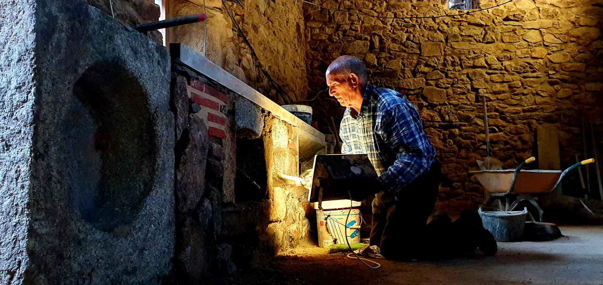
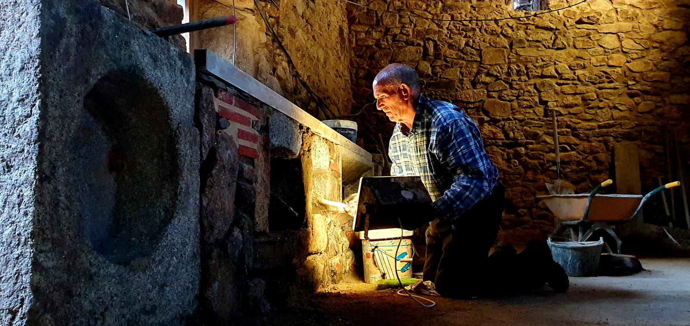
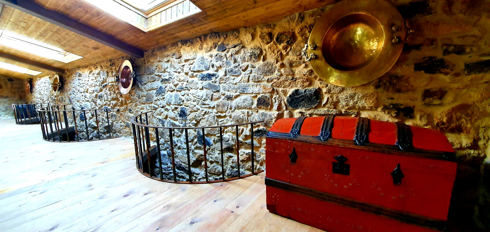
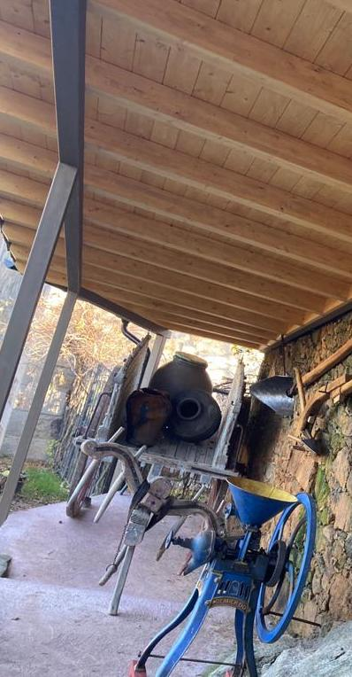
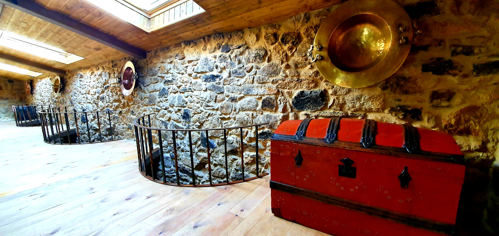
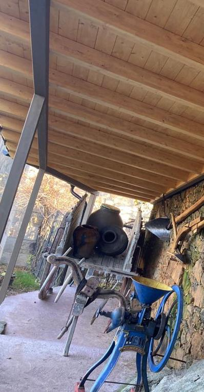

Ese proyecto nació durante la pandemia provocada por la Covid-19: demasiadas muertes y demasiadas historias perdidas. El conocimiento y cultura de nuestros mayores se perdía y sentí una gran necesidad por documentar su historia. Por ahora tengo suerte de que mis abuelos siguen con buena salud, pero el día que ya no estén quiero compartir su sus vivencias, cultura y conocimiento con más gente.
Durante el verano de 2020 restauré junto a mi abuelo el antiguo establo para hacer el museo físico. Lo vaciamos, lo limpiamos, enyesamos las juntas de las piedras, hicimos nuevos el suelo de hormigón y el de madera de la planta de arriba y pusimos los estantes con objetos para enseñar al público.
Esta página web la publiqué en enero de 2020 para acompañar al museo con descripciones de los objetos y para darlo a conocer al mundo.
Espero que disfrutes del museo tanto como lo he hecho yo durante el proceso.
 

 


